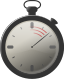

Features...
|  | Realtime collaboration - changes show up simultaneusly on all participants screens. | Color-coded edits - you can easily see who changed which part of the text. | |
| Infinite undo - no limit to how far back in history you can go and rescue an old version of a text. | Extensible - you can easily change and extend the software with modules adding extra functionality. |
Etherpad is...
An Etherpad example: Primarypad
EtherPad is the only web-based word processor that allows people to work together in really real-time.
When multiple people edit the same document simultaneously, any changes are instantly reflected on everyone's screen. The result is a new and productive way to collaborate on text documents, useful for meeting notes, drafting sessions, education, team programming, and more.
Using Etherpad...
Etherpad is both available as a software download that you can install on your own server, and as a Live! service that you can start using directly. If you chose to download and install Etherpad on your own server, you get the advantage of being able to customize the software and integrate it with the rest of your intranet solution.
Licensing...
Etherpad is Free Software. The various parts are licensed under Apache License 2.0, the BSD License, LGPL 2.1 and the GPL 2.0 licenses, respectively.